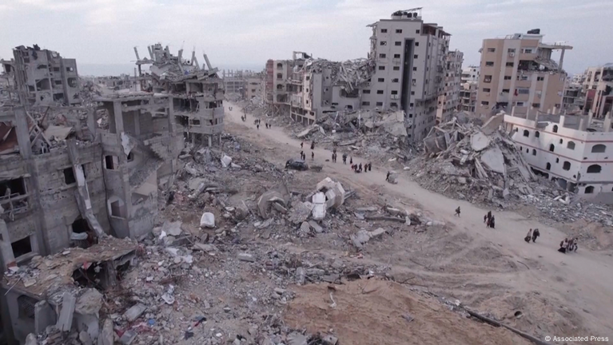

The Gaza Genocide represents one of the most devastating humanitarian crises in modern history. Since October 7, tens of thousands of civilians, including women and children, have been killed or severely injured due to continuous bombings and blockades. The destruction has extended to hospitals, schools, and essential infrastructure, leaving millions displaced and struggling to survive. According to the Palestinian Ministry of Health, over 64,229 people have been murdered and 161,583 injured as of 2025, including 1,009 murdered infants under one year old.

The loss of life is staggering. Children make up a significant portion of the casualties, with over 7,000 children between 6 and 12 years old murdered. Women and the elderly have also suffered greatly, with 14 women and 7 elderly dying every day on average. Infrastructure such as water networks, power plants, and hospitals have been destroyed, creating a dire famine and medical crisis across the Gaza Strip.
In the aftermath of the attacks, thousands have been left with life-changing injuries. As per recent health reports, over 2,889 people have undergone amputations or suffer from spinal cord injuries, with 1,718 patients currently being evaluated. These figures underscore the long-term humanitarian and psychological toll on Gaza’s population. The international community continues to call for immediate ceasefire and humanitarian access.
You can also access a specific section of the previous exercise using this link: Go to Brief History in Lab1Exo1